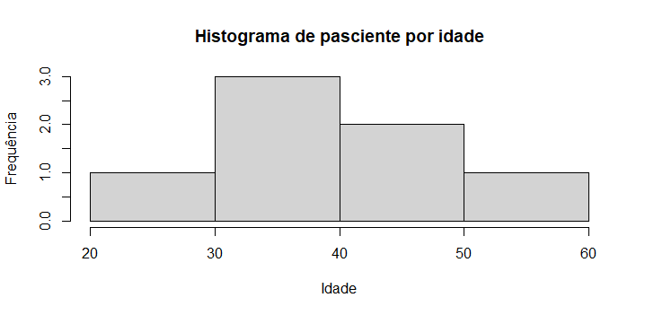
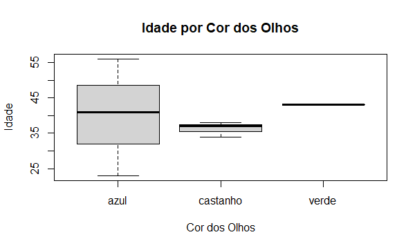
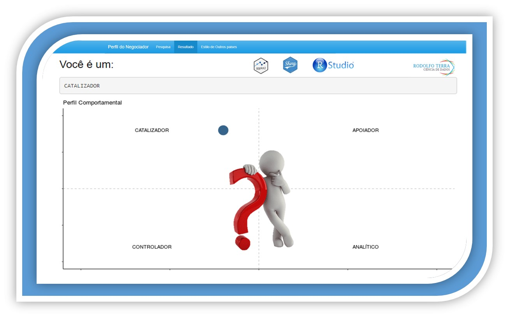

SQLDF
Aprenda a trabalhar com duas ferramentas ao mesmo tempo, podemos trabalhar com SQL dentro do RStudio.

Em síntese, data frames são tabelas de dados. Em seu formato, são bem parecidos com as matrizes, no entanto, possuem algumas diferenças significativas. Podemos idealizar os data frames como sendo matrizes de duas dimensões em que cada coluna armazena um tipo de dado diferente. Logo, estamos lidando com um objeto bem mais versátil do que as matrizes e os vetores.
Primeiramente iremos criar um Data frame, com as seguintes variáveis (nomes das colunas): - Nome do tipo character; - idade do tipo numérico; - itens do tipo numérico; - código do tipo inteiro;
# Criando vetores vaziosnomes <- character()idades <- numeric()itens <- numeric()codigos <- integer()df <- data.frame(c(nomes, idades, itens, codigos))class(df)| ## [1] "data.frame" |
Agora iremos construir alguns vetores, com as informações e colocar no data Frame.
# Criando Vetorespais = c("Portugal", "Inglaterra", "Irlanda", "Egito", "Brasil","Brasil")nome = c("Bruno", "Tiago", "Amanda", "Bianca", "Marta","Rodolfo")altura = c(1.88, 1.76, 1.53, 1.69, 1.68,1.73)codigo = c(5001, 2183, 4702, 7965, 8890, 8895)# Criando um dataframe de diversos vetoresdf = data.frame(pais, nome, altura, codigo)df
| pais | nome | altura | codigo | |
|---|---|---|---|---|
| 1 | Portugal | Bruno | 1.88 | 5001 |
| 2 | Inglaterra | Tiago | 1.76 | 2183 |
| 3 | Irlanda | Amanda | 1.53 | 4702 |
| 4 | Egito | Bianca | 1.69 | 7965 |
| 5 | Brasil | Marta | 1.68 | 8890 |
| 6 | Brasil | Luiz | 1.73 | 8895 |
Agora podemos acrescentar mais uma coluna em nosso conjunto de dados, utilizando a função cbind()que chamaremos de olho.
# Adicionando um novo vetor a um dataframe existenteolhos = c("verde", "azul", "azul", "castanho", "castanho","castanho")df = cbind(df, olhos)df| pais | nome | altura | codigo | olhos | |
|---|---|---|---|---|---|
| 1 | Portugal | Bruno | 1.88 | 5001 | verde |
| 2 | Inglaterra | Tiago | 1.76 | 2183 | azul |
| 3 | Irlanda | Amanda | 1.53 | 4702 | azul |
| 4 | Egito | Bianca | 1.69 | 7965 | castanho |
| 5 | Brasil | Marta | 1.68 | 8890 | castanho |
| 6 | Brasil | Luiz | 1.73 | 8895 | castanho |
Podemos também acrescentar observações, ao invés de colunas, com a funçãorbind().
pessoa_07 <- c("(Inglaterra",'Marcos','1.81', "5002",'azul')df = rbind(df, pessoa_07)df| pais | nome | altura | codigo | olhos | |
|---|---|---|---|---|---|
| 1 | Portugal | Bruno | 1.88 | 5001 | verde |
| 2 | Inglaterra | Tiago | 1.76 | 2183 | azul |
| 3 | Irlanda | Amanda | 1.53 | 4702 | azul |
| 4 | Egito | Bianca | 1.69 | 7965 | castanho |
| 5 | Brasil | Marta | 1.68 | 8890 | castanho |
| 6 | Brasil | Luiz | 1.73 | 8895 | castanho |
| 7 | Inglaterra | Marcos | 1.81 | 5002 | azul |
Para obter algumas informações básica:
str(df)| ## [1] 7 5 |
# Comprimentolength(df)| ## [1] 5 |
# Número de linhasnrow(df)| ## [1] 7 |
# Número de colunasncol(df)| ## [1] 5 |
É possível observar apenas as primeiras observações, usando a função head()
head(df)| pais | nome | altura | codigo | olhos | |
|---|---|---|---|---|---|
| 1 | Portugal | Bruno | 1.88 | 5001 | verde |
| 2 | Inglaterra | Tiago | 1.76 | 2183 | azul |
| 3 | Irlanda | Amanda | 1.53 | 4702 | azul |
| 4 | Egito | Bianca | 1.69 | 7965 | castanho |
| 5 | Brasil | Marta | 1.68 | 8890 | castanho |
Ou com a função tail() podemos observar as últimas observações:
tail(df)| pais | nome | altura | codigo | olhos | |
|---|---|---|---|---|---|
| 3 | Irlanda | Amanda | 1.53 | 4702 | azul |
| 4 | Egito | Bianca | 1.69 | 7965 | castanho |
| 5 | Brasil | Marta | 1.68 | 8890 | castanho |
| 6 | Brasil | Luiz | 1.73 | 8895 | castanho |
| 7 | Inglaterra | Marcos | 1.81 | 5002 | azul |
Para observarmos apenas uma única coluna, utilizaremos o símbolo df$`nome da coluna`, por exemplo para saber apenas os países.
df$pais| ## [1] "Portugal" "Inglaterra" "Irlanda" "Egito" "Brasil"## [6] "Brasil" "Inglaterra" |
Com a função levels() podemos observar as variáveis úncias da coluna, para isto precisamos converter a variável para o tipo factor.
levels(as.factor(df$pais))| ## [1] "Brasil" "Egito" "Inglaterra" "Irlanda" "Portugal" |
Podemos também observar a quantidade de cada varível, da coluna pais, com a função table()
table(df$pais)| #### Brasil Egito Inglaterra Irlanda Portugal## 2 1 2 1 1 |
Se quisermos apenas uma única observação, podemos trabalhar com fatiamento do dataframe, chamando primeiramente o número da linha que queremos e o número da variável. Quero retornar o nome Amanda, que se encontra na terceira linha e na segunda coluna.
df[3,2]| ## [1] "Amanda" |
Vamos ver novamente o nosso conjunto e dados.
df| pais | nome [,2] | altura | codigo | olhos | |
| 1 | Portugal | Bruno | 1.88 | 5001 | verde |
| 2 | Inglaterra | Tiago | 1.76 | 2183 | azul |
| 3 [3, ] | Irlanda | Amanda [3,2] | 1.53 | 4702 | azul |
| 4 | Egito | Bianca | 1.69 | 7965 | castanho |
| 5 | Brasil | Marta | 1.68 | 8890 | castanho |
| 6 | Brasil | Luiz | 1.73 | 8895 | castanho |
| 7 | Inglaterra | Marcos | 1.81 | 5002 | azul |
É possível retornar toda a coluna altura, na forma de fatiamento, deixando o espaço das linhas em branco.
df[3,]| ## [1] "1.88" "1.76" "1.53" "1.69" "1.68" "1.73" "1.81" |
É possível também realizar um filtro e retornar um subset que atenda a um critério específico. Me retorne apenas as colunas: "altura", “codigo” e “olhos” de pessoas que possuem altura menor que 1.7.
df[altura < 1.7, c("altura", "codigo","olhos")]| ## altura codigo olhos## 3 1.53 4702 azul## 4 1.69 7965 castanho## 5 1.68 8890 castanho |
Podemos modificar os nomes das colunas do nosso conjunto de dados, para isto, iremos primeiramente visualizar os nomes das colunas:
names(df$pais)| ## [1] "pais" "nome" "altura" "codigo" "olhos" |
Para que eu altero os nomes das colunas e os nomes das variáveis, utilizaremos as seguintes funções:
colnames(df) <- c('Var 1', 'Var 2', 'Var 3', 'Var 4', 'Var 5')rownames(df) <- c('Obs 1', 'Obs 2', 'Obs 3', 'Obs 4', 'Obs 5','Obs 6', 'Obs 7')df| Var 1 | Var 2 | Var 3 | Var 4 | Var 5 | |
|---|---|---|---|---|---|
| Obs 1 | Portugal | Bruno | 1.88 | 5001 | verde |
| Obs 2 | Inglaterra | Tiago | 1.76 | 2183 | azul |
| Obs 3 | Irlanda | Amanda | 1.53 | 4702 | azul |
| Obs 4 | Egito | Bianca | 1.69 | 7965 | castanho |
| Obs 5 | Brasil | Marta | 1.68 | 8890 | castanho |
| Obs 6 | Brasil | Luiz | 1.73 | 8895 | castanho |
| Obs 7 | Inglaterra | Marcos | 1.81 | 5002 | azul |
Corrigindo os nomes das colunas
colnames(df) <- c('País', 'Nome', 'Altura', 'Código', 'Cor dos Olhos')Iremos utilizar a função read.csv().Abaixo demonstraremos como carregar um conjunto de dados,
lembrando que é preciso determinar alguns parâmetros, file ou path, caminho do diretório do arquivo
em seu computador, header indicar se o conjunto de dados tem ou não o nome das variáveis e como é um arquivo.
csv temos que demonstrar qual é o separador, nesse dataset é a vírgula.
Abaixo temos 02 exemplo, o primeiro,
baixar o arquivo, e salva em seu computador. Ou Caso preferir pode
utilizar a segunda opção que pega o arquivo direto do repositório do GitHub.
# Primeira Opção
pacientes <- read.csv(file = 'C:/Users/Downloads/pacientes.csv', header = TRUE, sep = ",")
pacienteOu
# Segunda Opção
pacientes <- read.csv(file = 'https://github.com/rodolffoterra/rodolffoterra.github.io/blob/main/dados/pacientes.csv', header = TRUE, sep = ",")
pacientes| X | Idade | Admdate | Diabete | Status |
|---|---|---|---|---|
| 1 | 43 | 15/10/2015 | Tipo 1 | Ruim |
| 2 | 23 | 16/10/2015 | Tipo 2 | Bom |
| 3 | 56 | 23/10/2015 | Tipo 2 | Bom |
| 4 | 34 | 24/10/2015 | Tipo 1 | Ruim |
| 5 | '38 | 31/10/2015 | Tipo 1 | Medio |
| 6 | 37 | 28/10/2015 | Tipo 1 | Bom |
| 7 | 41 | 27/10/2015 | Tipo 1 | Ruim |
Podemos observar um resumo estatístico basico, das variáveis numéricas
summary(pacientes)| ## x Idade Admdate Diabete Status ## Min. :1.0 Min. : 23.00 Length:7 Length:7 Length:7 ## 1st Qu. :2.5 1st Qu. : 35.50 Class :character Class :character Class :character ## Median :4.0 Median : 38.00 Mode :character Mode :character Mode :character ## Mean :4.0 Mean : 38.86 ## 3rd Qu. :5.5 3rd Qu. : 42.00 ## Max :7.0 Max : 56.00 |
Para concluir este pequeno arquivo em relação a Data Frame, iremos combinar os dois dataframe criados, df e pacientes.
dataset_final <- cbind(df, pacientes)
dataset_final| País | Nome | Altura | Código | Cor dos Olhos | X | Idade | Admdate | Diabete | Status | |
|---|---|---|---|---|---|---|---|---|---|---|
| Obs 1 | Portugal | Bruno | 1.88 | 5001 | verde | 1 | 43 | 15/10/2015 | Tipo 1 | Ruim |
| Obs 2 | Inglaterra | Tiago | 1.76 | 2183 | azul | 2 | 23 | 16/10/2015 | Tipo 2 | Bom |
| Obs 3 | Irlanda | Amanbda | 1.53 | 4702 | azul | 3 | 56 | 23/10/2015 | Tipo 2 | Bom |
| Obs 4 | Egito | Bianca | 1.69 | 7965 | castanho | 4 | 34 | 24/10/2015 | Tipo 1 | Ruim |
| Obs 5 | Brasil | Marta | 1.68 | 8890 | castanho | 5 | 38 | 31/10/2015 | Tipo 1 | Medio |
| Obs 6 | Brasil | Rodolfo | 1.73 | 8895 | castanho | 6 | 37 | 28/10/2015 | Tipo 1 | Bom |
| Obs 7 | Inglaterra | Marcos | 1.81 | 5002 | azul | 7 | 41 | 27/10/2015 | Tipo 1 | Ruim |
Abaixo começaremos a ver apenas dois gráficos, introdutório, do que veremos na
prtóxima semana Análise Exploratória dos dados. Veremos um gráfico de
histograma, e um boxplot. No publicação, iremos explicar estes dois gráficos e
muitas outras ferramentas. Existe muito mais a se mencionar em relação a Data
Frame. Aqui foi apenas uma pequena introdução sobre o tema. Dívidas ou
interesses, favor enviar um e-mail para que eu possa acrescenter no material ou
trazer assuntos que melhor agradem vocês.
E agora para encerrae podemos observar um gráfico histograma da Idade dos
pascientes.
hist(pacientes$Idade, main= "Histograma de pasciente por idade", xlab = "Idade", ylab = "Frequência")

E podemos observar um box plot em relação a idade por cor dos olhos.
plot(dataset_final$Idade ~ as.factor(dataset_final$`Cor dos Olhos`),
xlab = 'Cor dos Olhos', ylab = 'Idade', main = 'Idade por Cor dos Olhos')

Aprenda a trabalhar com duas ferramentas ao mesmo tempo, podemos trabalhar com SQL dentro do RStudio.

Um vetor em R é uma estrutura básica dentro da linguagem, que permite armazenar uma quantidade numérica ou string (letras ou caracteres), em um único objeto. O vetor possui apenas 01 única dimensão.

Matrizes é caracterizado como uma coleção de vetores, sendo todos do mesmo tipo (numérico ou caracteres) armazenados entre linhas e colunas.
12 / 03 / 2021

19 / 03 / 2021

26 / 03 / 2021
 Por melhor negociador que você acredite ser, você já foi persuadido por pelo menos um dos 4 tipos de negociador mais conhecidos. Seja no seu trabalho, em lojas de roupas e calçados ou quando seu filho insiste em ter algo que você sabe que ele não precisa. A negociação está presente em nossas vidas constantemente, seja na profissional, seja na pessoal. Esta aplicação desenvolvida em Shiny, linguagem R, mostrará qual dos perfil você melhor se identificarao responder um pequeno enquete.